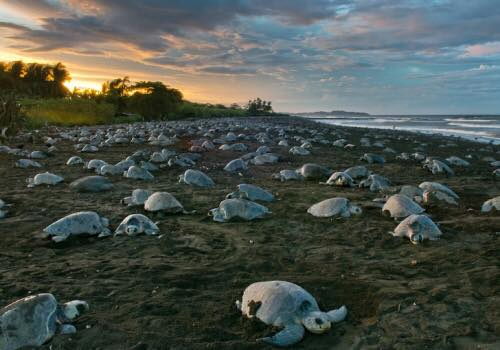
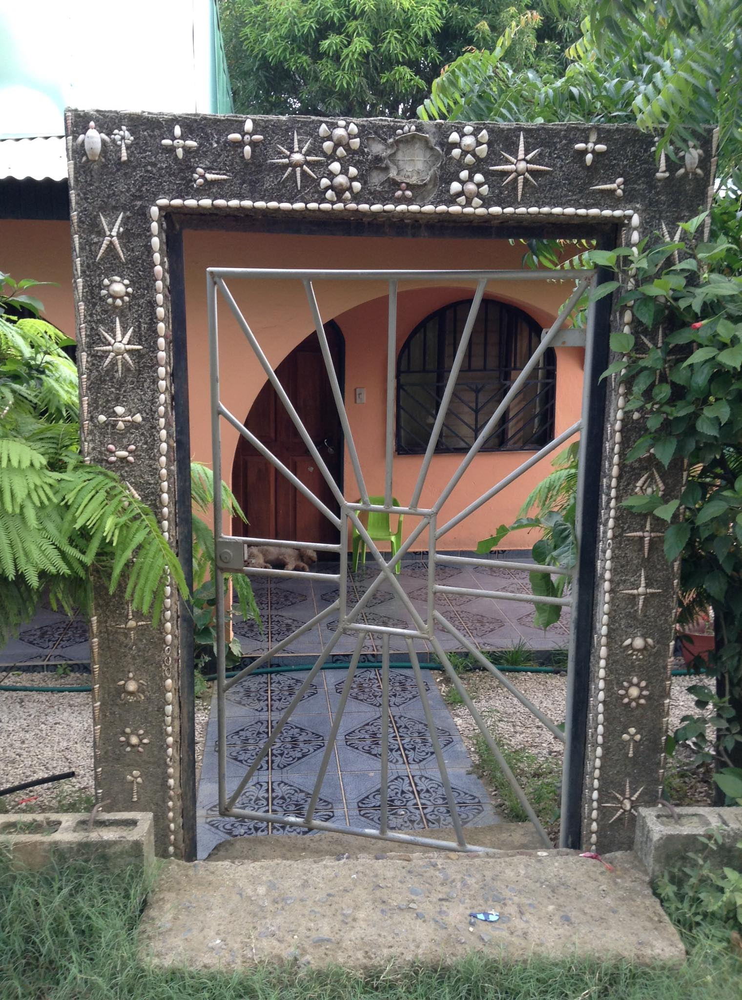
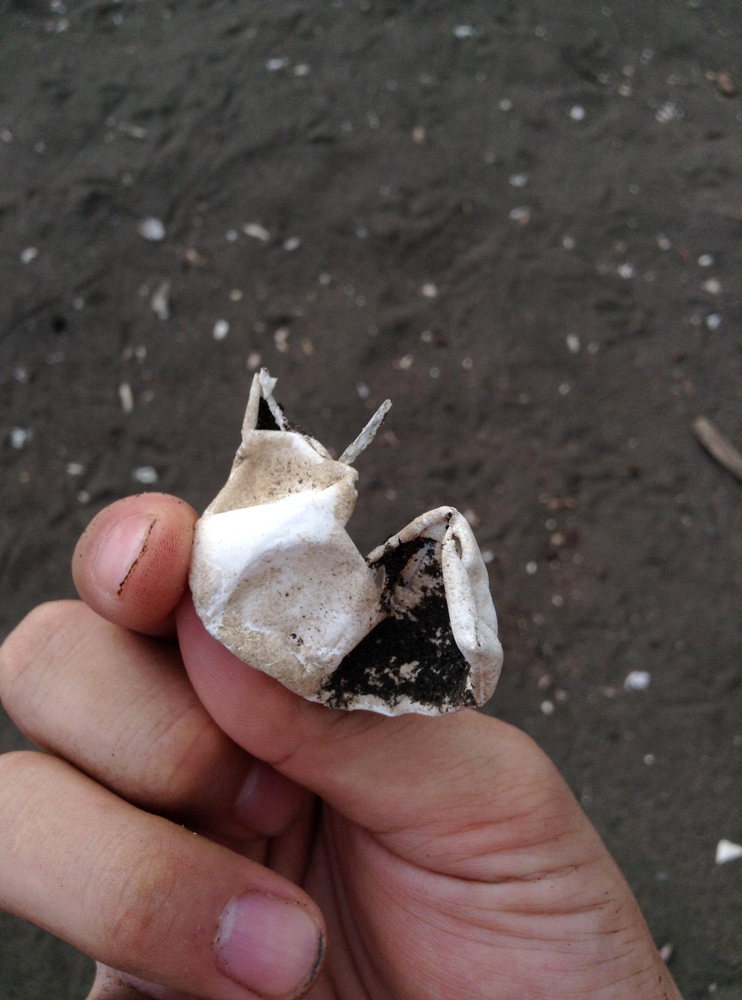
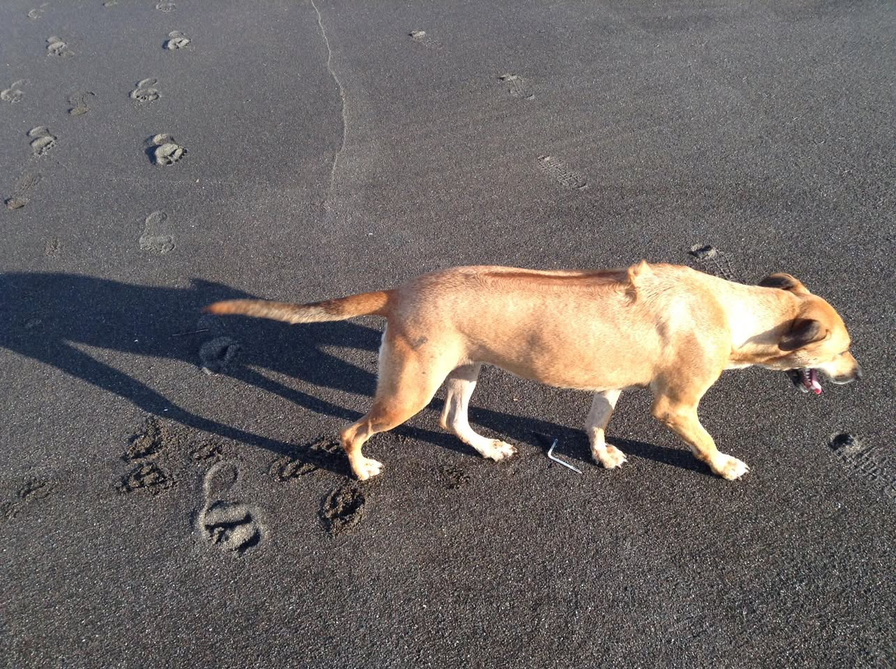
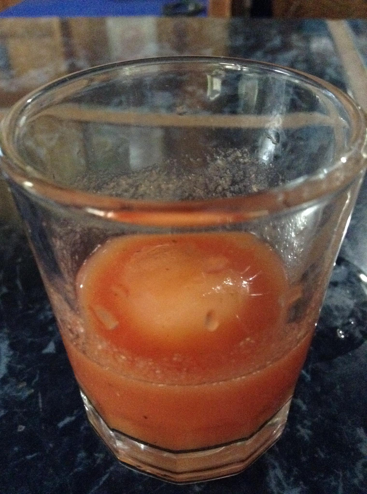

Have you heard the word Arribada?
Thousands of Sea Turtles on a Single Beach
The Arribada is the mass-nesting phenomenon of Olive Ridley turtles coming ashore together to lay their eggs. The word means "arrival" in Spanish — in a single nesting event, thousands to tens of thousands of turtles converge on the same beach. It's only seen along certain Pacific coasts in Mexico, Costa Rica, and Panama, making it a globally rare sight.

"The Arribada has started"
September 2015, less than a month before my return to Japan. I got the news that an Arribada was happening. There was no way I was leaving Costa Rica without seeing one. I made the call to go right then.
The problem was the distance. From my post in San Vito to the beach, it was over 14 hours by bus. I went anyway.

The Arribada Was Already Over
The next morning, I went to the beach.
A vast stretch of black sand, perfectly clear sky. And — not a single turtle.
The sand was scattered with countless eggshells. The Arribada had happened about a week before I arrived, and the turtles, finished with their nesting, had long since returned to the sea.


I Ate a Sea Turtle Egg
Since I'd come all this way, I tried a sea turtle egg. The local way: pour tomato juice into a shot glass, drop in one turtle egg.
The white was loose and didn't set. The yolk had a springy texture I wasn't going to chew on, so I swallowed it whole.

Harvest and sale of sea turtle eggs is illegal in Costa Rica, but at the time some Pacific coast communities still harvested as a local custom. Today, protections are stricter.
14 hours by bus and it was already over. I don't regret it. The vast stretch of black sand, the dog that came along, the turtle egg I swallowed whole — I still remember it all clearly. The farthest trip I made in Costa Rica.